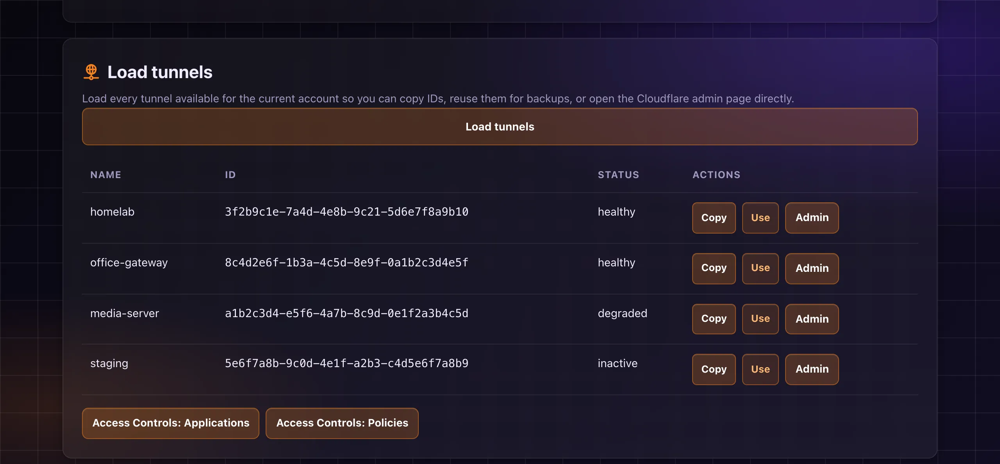
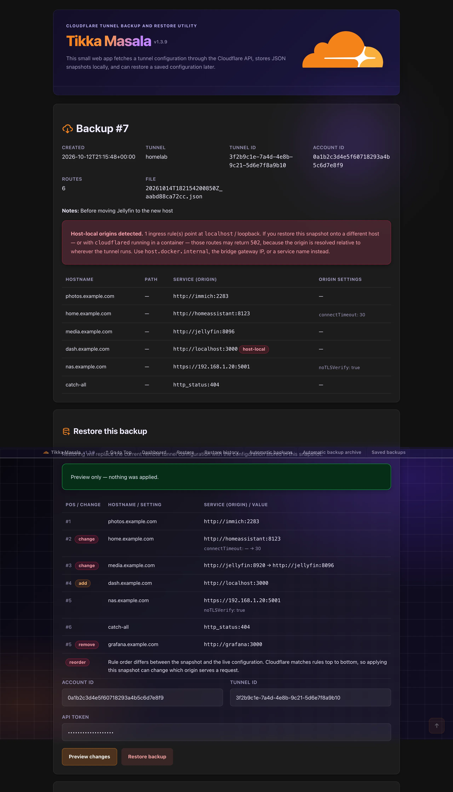
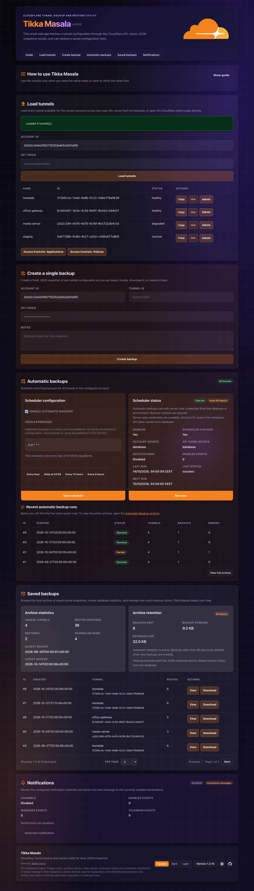
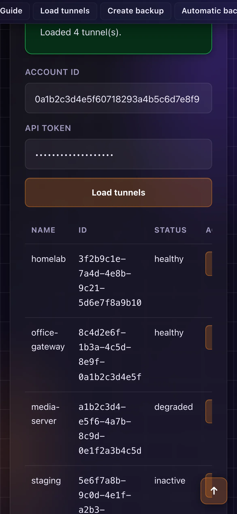

Tikka Masala snapshots your tunnel configurations to JSON, shows where every ingress rule points, and previews a restore as a diff before it touches anything. Self-hosted, with scheduled backups and notifications.

Cloudflare keeps tunnel configurations only in its dashboard. Tikka Masala keeps a copy on storage you control, and makes rolling back a reviewed, deliberate step.
Verify a Cloudflare API token, list every tunnel in the account, open any of them in the Cloudflare dashboard, and jump to Access Applications and Policies.
Each backup is a plain JSON file with the full tunnel configuration, plus metadata (time, account, tunnel, notes) in SQLite. Download any of them in one click.
The backup page lists hostname, path, origin and originRequest settings for each rule, and flags localhost origins that can break when cloudflared runs elsewhere.
Diff a snapshot against the tunnel's live configuration: added, removed and changed rules, reordering, and non-ingress settings. Nothing is applied until you confirm.
Push a snapshot back to its original tunnel, another tunnel or another account, with a restore history that records where each backup went.
A built-in cron scheduler backs up all tunnels or a chosen subset, with per-tunnel frequency (every run, weekly, monthly) and automatic retention.
Results over a generic webhook and/or Telegram, per-event, with messages you can rewrite using placeholders.
With TOKEN_ENCRYPTION_KEY set, the API token is saved encrypted (Fernet) in SQLite; without it, the token is never written to disk.
Multi-arch images (amd64, arm64) on Docker Hub and GHCR. A demo mode lets you try the UI without persisting anything.
Screenshots from a demo instance with made-up tunnels on example.* hosts.

Backup detail and restore preview. Every ingress rule of the snapshot with its origin and settings; the localhost origin is flagged. Below, Preview changes diffs the snapshot against the live tunnel: two changed rules, one added, one removed, and a warning that the order differs. (Scroll inside the image.)

Home. Load tunnels, take a manual backup, configure the scheduler and see its recent runs, browse saved backups with archive statistics and retention, and check notification channels. (Scroll inside the image.)

Mobile. The web UI works on small screens too.
Tikka Masala talks to the Cloudflare API with your token and keeps everything else local.
Enter (or prefill from the environment) your Account ID and an API token with Cloudflare Tunnel permissions, verify it, and load the tunnels.
Back up a tunnel by hand, with optional notes, or let the scheduler back up all tunnels (or a subset) on a cron schedule. Each snapshot is a JSON file under /data/backups.
Open a backup to see every ingress rule and where it points. Host-local origins are flagged, so you know which routes depend on where cloudflared runs.
Pick the target tunnel and press Preview changes: Tikka Masala fetches its live configuration and shows the diff against the snapshot, without applying anything.
Apply the snapshot. It replaces the tunnel's whole remote configuration, gets recorded in the restore history, and triggers a notification if you set one up.
All you need is Docker. Official images are published for every release:
# Get a sample environment file and fill it in curl -Lo .env https://raw.githubusercontent.com/gioxx/TikkaMasala/main/.env.sample nano .env # Start docker run -d \ --name tikkamasala \ --restart unless-stopped \ --env-file .env \ -p 8080:8080 \ -v "$(pwd)/data:/data" \ gfsolone/tikkamasala:latest
The web UI is available at http://localhost:8080. Backups and settings live in ./data, so they survive container updates.
python3 -c "from cryptography.fernet import Fernet; print(Fernet.generate_key().decode())"
Put it in TOKEN_ENCRYPTION_KEY: without it the API token is never saved server-side, and scheduled backups need CLOUDFLARE_API_TOKEN in the environment.
docker pull gfsolone/tikkamasala:latest docker rm -f tikkamasala # data stays in ./data # then run the same docker run command again
Pin a release (e.g. gfsolone/tikkamasala:1.3.9) instead of latest to upgrade on your own schedule. Compose and Portainer setups are in the docs below.
Everything below is also in the README.
Recommended token permissions: Account: Cloudflare Tunnel -> Edit and Zone: DNS -> Edit. For backup-only usage, the token can later be reduced to read-only permissions if your workflow allows it.
Configure the app through environment variables, whether you use Docker Compose, docker run, Portainer, or a direct shell session. Start from .env.sample.
| Variable | Required | Description |
|---|---|---|
CLOUDFLARE_ACCOUNT_ID | No | Prefills the Cloudflare account ID in the UI. |
CLOUDFLARE_API_TOKEN | No | Prefills the API token in the UI. |
TOKEN_ENCRYPTION_KEY | Recommended | Fernet key used to encrypt the API token before saving it in SQLite. |
AUTO_BACKUP_TIMEZONE | No | Force automatic backups to use a specific IANA timezone such as Europe/Rome. |
BACKUP_RETENTION_DAYS | No | Automatically delete backups older than this many days after new backups are created. |
NOTIFICATION_WEBHOOK_URL | No | Send JSON notifications to a generic webhook endpoint. |
NOTIFICATION_WEBHOOK_EVENTS | No | Comma-separated list of notification events to emit to the webhook. |
TELEGRAM_BOT_TOKEN | No | Telegram bot token used to send notifications through the Bot API. |
TELEGRAM_CHAT_ID | No | Telegram chat, group, or channel ID where notifications should be sent. |
TELEGRAM_NOTIFICATION_EVENTS | No | Comma-separated list of notification events to emit to Telegram. |
DATA_DIR | No | Storage path for the SQLite database and JSON backups. Default: /data. |
REQUEST_TIMEOUT | No | Outbound Cloudflare API timeout in seconds. Default: 20. |
LOG_LEVEL | No | Application log level written to container stdout. Default: INFO. |
CLOUDFLARE_API_BASE | No | Override for the Cloudflare API base URL. Default: https://api.cloudflare.com/client/v4. |
DEMO | No | Enable demo mode. Defaults to false. Disables persistence, automatic backups, notifications, and the backup archive. |
Prebuilt images are published on every release on Docker Hub (gfsolone/tikkamasala) and the GitHub Container Registry (ghcr.io/gioxx/tikkamasala), so building locally is optional.
The docker-compose.yml in the repository builds the image locally and mounts ./data into the container so backups and settings survive restarts.
git clone https://github.com/gioxx/TikkaMasala.git && cd TikkaMasala cp .env.sample .env docker compose up -d --build
Then open http://localhost:8080. To use a prebuilt image instead, replace build: . with image: gfsolone/tikkamasala:latest.
python3 -m venv .venv source .venv/bin/activate pip install -r requirements.txt set -a source .env set +a uvicorn app.main:app --host 0.0.0.0 --port 8080
Portainer stacks pull an image rather than building from a local Dockerfile. From Stacks → Add stack, paste:
services: tikkamasala: image: gfsolone/tikkamasala:latest container_name: tikkamasala restart: unless-stopped environment: CLOUDFLARE_ACCOUNT_ID: ${CLOUDFLARE_ACCOUNT_ID:-} CLOUDFLARE_API_TOKEN: ${CLOUDFLARE_API_TOKEN:-} TOKEN_ENCRYPTION_KEY: ${TOKEN_ENCRYPTION_KEY:-} AUTO_BACKUP_TIMEZONE: ${AUTO_BACKUP_TIMEZONE:-} BACKUP_RETENTION_DAYS: ${BACKUP_RETENTION_DAYS:-90} DEMO: ${DEMO:-false} ports: - "8080:8080" volumes: - tikkamasala_data:/data volumes: tikkamasala_data:
Use ghcr.io/gioxx/tikkamasala:latest instead if you prefer GHCR. Set the values in the stack's Environment variables panel (Portainer prompts for anything left as ${VAR} without a default) or edit the environment: block directly, adding any other variable from the table above. The named volume can be swapped for a bind mount (e.g. /opt/tikkamasala/data:/data) if you'd rather keep backups on a known host path.
The UI can prefill authentication fields from three sources: environment variables, saved values in the local database, and a browser cookie for the API token. Effective priority:
Automatic backups use only server-side credentials: database or environment. Browser cookies are never used by the scheduler.
After a successful token verification or API action, the Account ID is saved in app.db, the API token is stored in a browser cookie, and it is also saved in app.db only if TOKEN_ENCRYPTION_KEY is configured.
CLOUDFLARE_ACCOUNT_ID or CLOUDFLARE_API_TOKEN are still set in the environment, the UI keeps showing those values as prefilled.Everything is stored under DATA_DIR, which defaults to /data in the container and typically maps to ./data on the host:
app.db: SQLite database for backup metadata, restore history, and saved auth settingsbackups/*.json: exported tunnel configuration snapshotsTikka Masala saves the tunnel configuration returned by the Cloudflare Tunnel configuration endpoints, along with backup metadata: export timestamp, account ID, tunnel ID, tunnel name, and notes. It does not back up arbitrary account-wide Cloudflare settings.
The backup detail page lists every ingress rule from the snapshot (hostname, path, origin service, and any originRequest settings such as noTLSVerify, httpHostHeader or connectTimeout), so you can see where each route points without downloading the JSON.
service targets localhost or a loopback address (127.0.0.0/8, ::1) is flagged as host-local. That address is resolved relative to wherever cloudflared runs: when it runs in a container, localhost is the container, not the Docker host, so the route can return 502 after a restore even though it worked where the backup was taken. Use host.docker.internal, the bridge gateway IP, or a service/container name instead.Restoring a backup replaces the current remote configuration of the selected tunnel with the configuration stored in the snapshot. The target can be the original tunnel, a different tunnel, or a tunnel in another account.
The backup detail page keeps a restore history: when a backup was restored, which account and tunnel it was restored to, and whether the restore targeted the original tunnel, a different tunnel, or a different account.
The restore form has a Preview changes button next to Restore backup. It fetches the target tunnel's current live configuration and compares it against the snapshot without applying anything, then shows:
originRequest settings changed on an existing rule, or which ones a new/removed rule carrieswarp-routing, since restore replaces the whole tunnel configuration, not just ingressPreviewing does not apply anything or record restore history; the account ID, tunnel ID, and API token you entered stay filled in so you can review the diff and then press Restore backup.
The scheduler is built into the app and stores its configuration in the local SQLite database. From the home page you can enable or disable automatic backups, set a cron expression, run the job immediately with Run now, and see the last run, next run, and recent execution history.
By default, automatic backups use the timezone detected from the browser when you save the schedule. Set AUTO_BACKUP_TIMEZONE for a fixed server-side timezone for all users.
The Advanced schedule page (/auto-backup/tunnel-filters) controls backup scope and per-tunnel frequency.
Per-tunnel frequency: Every run (default), Once per week (skipped if a backup exists within the last 7 days) or Once per month (skipped if a backup exists within the last 30 days). This lets you run the scheduler daily while backing up low-priority tunnels only once a week.
BACKUP_RETENTION_DAYS is set, old backup files and related database records (including restore history) are deleted automatically after new backups are created.Tikka Masala can send server-side notifications through a generic webhook and/or Telegram. Set NOTIFICATION_WEBHOOK_URL / NOTIFICATION_WEBHOOK_EVENTS and/or TELEGRAM_BOT_TOKEN / TELEGRAM_CHAT_ID / TELEGRAM_NOTIFICATION_EVENTS.
Supported events: notification_test, manual_backup_success, manual_backup_failed, auto_backup_success, auto_backup_partial, auto_backup_failed, restore_success, restore_failed, retention_cleanup. If a channel's events variable is empty, the default set is enabled: auto_backup_success, auto_backup_partial, auto_backup_failed, restore_failed, retention_cleanup.
Webhook notifications send a JSON payload with app name and version, event name, message, timestamp, and event-specific details. Telegram sends the same information as a plain-text message, compact by default (title and message only); uncheck Compact Telegram notifications on the Customize notification messages page to append the key: value details block. Use Send test notification from the UI to verify delivery.
Each event has a built-in default message. Override it from /notifications/messages. Messages support {placeholder} tokens replaced at runtime; {version} and {timestamp} are always available.
| Event | Available tokens |
|---|---|
notification_test | (none specific) |
manual_backup_success | {backup_id}, {account_id}, {tunnel_id}, {tunnel_name}, {route_count} |
manual_backup_failed | {account_id}, {tunnel_id}, {error} |
auto_backup_* | {trigger}, {account_id}, {tunnel_count}, {backup_count}, {error_count}, {skipped_count}, {processed_count}, {backed_up_tunnels}, {skipped_tunnels} |
restore_success | {backup_id}, {account_id}, {tunnel_id} |
restore_failed | {backup_id}, {account_id}, {tunnel_id}, {error} |
retention_cleanup | {deleted_count}, {retention_days}, {cutoff} |
For auto_backup_* events: {tunnel_count} is every tunnel discovered on the account, {processed_count} is backup_count + error_count, {skipped_count} is tunnels skipped by scheduling rules, and {backed_up_tunnels} / {skipped_tunnels} are comma-separated tunnel name lists (or - if none). Leaving a field empty restores the built-in default; unknown tokens are left as-is.
Set DEMO=true to try the UI without persisting auth data or enabling server-side automation: authentication data is not stored in SQLite or the browser cookie, automatic backups, notifications and the backup archive are disabled. Manual tunnel listing and manual backup downloads still work.
TOKEN_ENCRYPTION_KEY is missing, the token is not written to SQLite at all.TOKEN_ENCRYPTION_KEY.TOKEN_ENCRYPTION_KEY?The API token is not written to SQLite at all. It's still usable via the browser cookie or environment prefill during your session, but scheduled backups won't have server-side credentials unless CLOUDFLARE_API_TOKEN is set in the environment.
Check whether that rule's origin is localhost or a loopback address: the backup detail page flags these as host-local. When cloudflared runs in a container, localhost means the container, not the Docker host. Point the rule at host.docker.internal, the bridge gateway IP, or a service/container name instead, and use Preview changes to see the full ingress diff before you apply.
Cloudflare moved Tunnels out of Zero Trust and under Networking. Update to 1.3.9 or later: the Admin link in the tunnel list now opens the tunnel's overview at its new location. The Access Controls links (Applications and Policies) are unaffected.
Yes, on the Advanced schedule page: back up all tunnels or a selected subset, and set a per-tunnel frequency of every run, once per week, or once per month.
Yes, they're independent channels: enable either one or both, each with its own event list.
No. It backs up only the tunnel configuration of the tunnels you back up, plus metadata like timestamp and tunnel name, not account-wide settings, DNS records or Access policies.